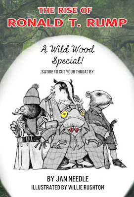

 |
| And now folks - Rump of Rump Hall! |
{kind=link}
Somehow or other this blog appeared briefly on Weds, then just as mysteriously vanished. Hillary to blame, or Mr Trump - the choice is yours. Maybe the blonde bombshell himself will evaporate. Trump. Ooh, what a disgusting thought...
Is it possible to watch the world events of today without despairing just a teeny weeny bit? In England the whole concept of truth is being redefined by the day, with political integrity leading the van. Men and women who pride themselves on their probity (they are honourable and right honourable members, for God’s sake) now talk about a ‘post-honest society’ as if it is the most natural thing in the world.
Brexit battle buses festooned in blatant
lies are now passed off jokily as rather neat examples of how to game an
unimportant argument, while our new and unelected leaderene insists that she
has an unshakeable mandate to do what most thinking people look on with growing
apprehension.
Ian Duncan Smith, the caring Conservative
who brought us the bedroom tax among other delights, calls Keir Starmer a
second-rate lawyer and then smirkingly denies it again and again to Jon Snow on
Channel 4 news. What do you mean, it’s recorded? The recording’s wrong! I quite
simply didn’t say it! Are you suggesting a politician could tell a lie?
And across the Pond, well, things are ten
times worse. A man who might be leader is a liar, a cheat, a rogue – anything
you like to call him. What’s more, he doesn’t mind if you do, because he cannot
hear you. Like IDS he’s selectively deaf.
What’s left, then? Willie Rushton once
replied, when asked ‘where would we be without a sense of humour?’ – ‘Germany.’
He was joking, and his brand of humour helped me to my latest ‘work.’ For to
me, just for the moment, humour seems the only hope.
I wrote a book once called Wild Wood, which
Willie Rushton illustrated. It told the story of the Wind in the Willows back
to front. Toad was the villain, the stoats and weasels were the starving rural
poor. There was a revolution, in which Toad Hall was invaded, and the poor
folks got to have a drink or two, on the house. It was a heady time, which
sadly ended in tears, as revolutions tend to do.
But what sort of man was Toad, I got to
thinking a couple of weeks ago. Fat, immoral, ugly, charismatic, stinking rich,
completely selfish, a disgrace in human form.
You can see where I’m going with this, of
course you can. During a conversation with a friend of mine called Andy
Lynch and his daughter Andrea, in a
louche and lovely eatery in Manchester called the Blue Pig, it suddenly occurred
to us that Mr Toad and Mr Trump were one and the same animal.
Toad, in the scheme of things, deserved
nothing, despite his great charisma. But in the scheme of things, this
self-same Toad had everything. And here was Donald, licking his lips
lasciviously over every female who was not a ‘dog’ or ‘pig,’ and putting in his
claim to – everything.
| Me and Liz P, who wrote a song for the book |
{kind=link}
But she didn’t argue, and she didn’t try to
stop me. If I come to regret it, I wouldn’t be surprised. But I thank her for
her understanding.
It seems to me, you see, that men like
Trump (and the people behind the corrupting of Western politics all over) have
to be pointed at, and mocked, however little good it’s going to do. So mine and
Julia’s lovely book – purely as a nine-days wonder, an electronic chimera for a
few short weeks – is now called The Rise of Ronald T.Rump, with the subtitle
Rump of Rump Hall.
His fatcat sidekicks have become Prat, Hole
and Todger, and the miserable little stoat who takes them on in the name of
holier-than-thou leftism has transformed from Boddington (peculiarly yellow,
exceedingly bitter, but one of the best) to one Korban, an animal who knows a
thing or two about man-management. If nothing else.
The Chief Weasel is called Clinton, and
Toad, naturally, is Rump. As the great man once said, let the wild Rumpus
begin.
I’m giving it away (!) at 99p, which will
hardly cover the cost of ink and paper. I don’t care. I’m not in it for the
money, I’m in it for love.
We mustn’t get bitter, must we? That way
madness lies.
The Rise of Ronald T.Rump
Wild Wood